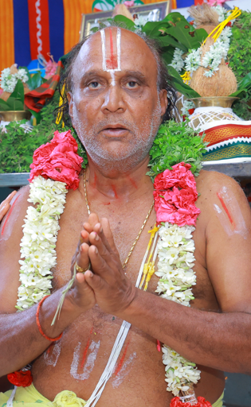

C. Sridharan
Founder / Managing Trustee
M.A. (Sribhashyam), M.A. (Tamil), M.Phil., M.Ed.
Sri Ramanujar Seva Trust
Manavalanallur- Vriddhachalam , Tamil Nadu
A seva trust inspired by the life and teachings of Srimad Ramanujar.
The Feet of Udayavar are the Only Way to Salvation.
Sri Ramanujar Seva Trust
Sri Ramanujar Seva Trust is dedicated to carrying forward the values of devotion, compassion, service and spiritual responsibility inspired by the teachings of Srimad Ramanujar.
Replace this text with the official history and mission of the Trust.
About Us
Founder / Managing Trustee

Founder / Managing Trustee
M.A. (Sribhashyam), M.A. (Tamil), M.Phil., M.Ed.
President
M.A., M.A., M.Phil., B.Ed
Secretary
B.E.
Treasurer
B.E.
Srimad Ramanujar
Explore the life, works and teachings of Srimad Ramanujar.
Srimad RamanujarAbout Us
Official information to be added by the Trust.
Official information to be added by the Trust.
Official information to be added by the Trust.
Official information to be added by the Trust.
Our Activities
The Trust deed identifies religious service, education and training, health care, welfare, and relief as stated objectives.
Poojas, festivals, special darshan and annadhanam at Perumal temples.
Veda and Agama learning, archagar coaching, adult education, vocational training and related study.
Health awareness, medical services, disease prevention, care and support for people with disabilities.
Support Seva
Your support can help the Trust continue its service activities.
Official donation information can be added here.
Contact
Vriddhachalam / Manavalanallur, Tamil Nadu
The Feet of Udayavar are the Only Way to Salvation.
Contact Us